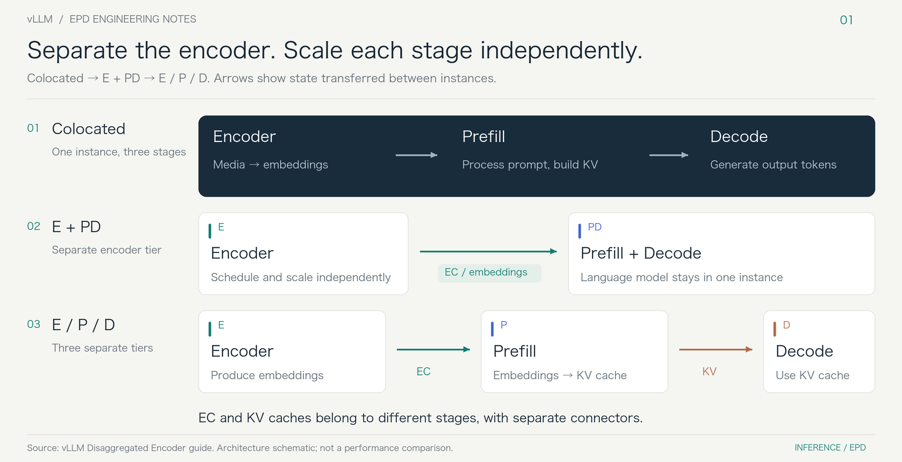
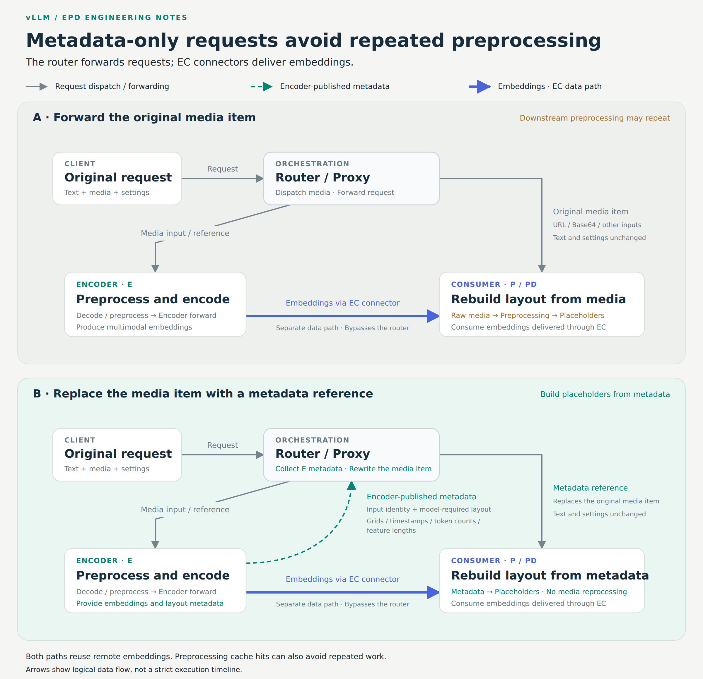
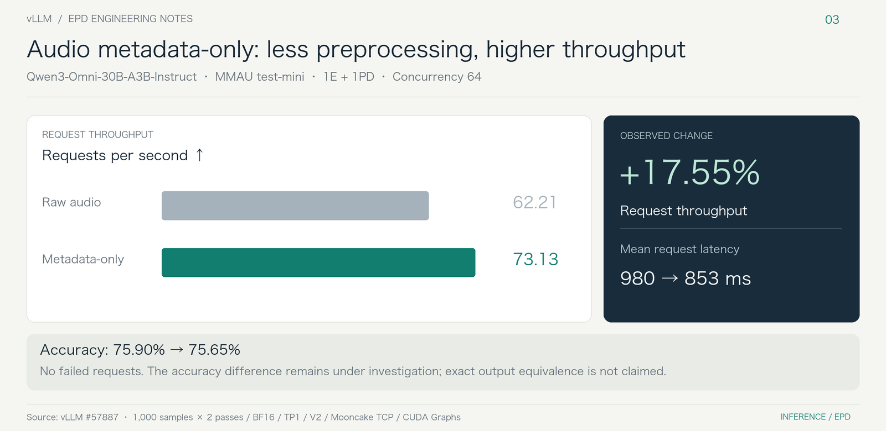
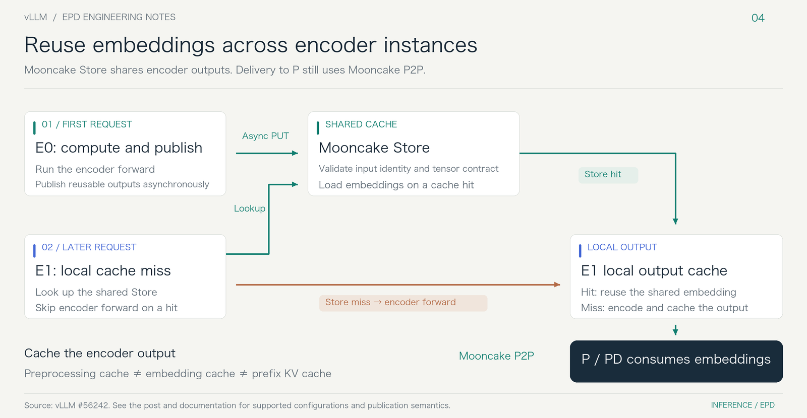
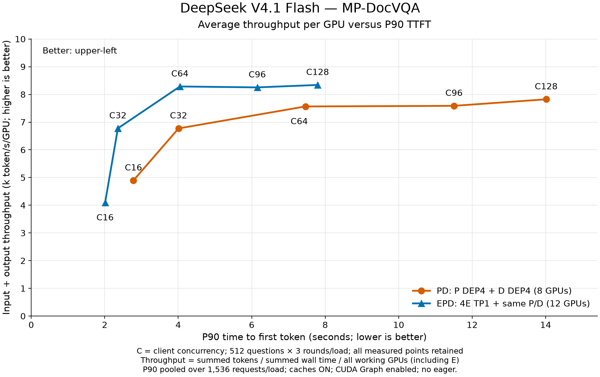

vLLM 中的编码器分离：使用 EPD 扩展多模态服务
多模态推理在语言模型执行之前增加了一个编码阶段。图像、视频帧和音频必须先处理为嵌入（embedding），语言模型才能使用它们。这个阶段的负载会随媒体大小、模态和请求组合而变化，而且可能独立于预填充（prefill）和解码（decode）的负载发生改变。
编码器 / 预填充 / 解码分离（Encoder / Prefill / Decode disaggregation，EPD）把这些阶段拆分为可独立部署的 vLLM 实例。vLLM 社区近期围绕模型执行、远程嵌入传输、共享缓存、多模态输入处理和请求路由，持续扩展 EPD 能力。
DeepSeek 的推理部署问答描述了把视觉编码器单独部署的 E/P/D 架构。vLLM 自 2025 年 12 月发布架构文章以来一直支持编码器分离，并持续改进。当前 vLLM main 分支还支持 DeepSeek V4.1 Flash 的纯元数据 EPD。
本文聚焦五项工程改进：
- 纯元数据请求：让下游实例使用远程嵌入，而不重复媒体预处理。
- 专用编码器执行：独立的 Model Runner V2 路径、仅编码器 CUDA Graph 支持，以及更少的检查点加载 I/O。
- 通过 NIXL 和 Mooncake 集成传输远程嵌入。
- 通过 Mooncake Store 跨编码器复用输出。
- 降低 Python EPD 代理的编排开销，并通过 vLLM Router、SMG 和 llm-d 编排 EPD。
EPD 跟踪议题汇总了仍在进行的工作。下文介绍的 vLLM 核心能力（包括 MiMo 和 XPU 支持）已包含在 vLLM v0.32.0 中。DeepSeek V4.1 Flash 的纯元数据支持已通过 #62802进入 main。下文的 vLLM Router 和 SMG 集成使用各自的 main 分支。
为什么要分离编码器？
多模态请求通常经过三个阶段：
- 编码器（E）：预处理媒体并生成多模态嵌入。
- 预填充（P）：处理提示词和多模态嵌入，建立生成所需的状态。
- 解码（D）：使用这些状态生成输出 token。
EPD 支持两种部署模式：E+PD 将编码器单独部署、预填充和解码合并部署；E/P/D 则把三个阶段全部独立部署。

图 1：E+PD 将编码与语言模型执行分开；E/P/D 进一步分离预填充和解码。EC 连接器负责传递编码器嵌入，KV 连接器负责在预填充和解码之间传递状态。
图像占比较高的工作负载可能需要增加编码器容量，却不需要同比增加解码容量；输出较长的工作负载则可能相反。拆分这些阶段后，运维人员可以独立调整各阶段的实例数和执行设置，同时把编码器计算从运行语言模型的 GPU 上移走。
纯元数据请求：避免重复预处理
仅传输嵌入并不足以完成交接。消费者还需要足够的信息来重建多模态输入布局，包括占位符长度、图像网格、特征长度，以及把这些位置与所传嵌入关联起来的标识符。
一种直接的 EPD 实现会把原始媒体发给编码器，通过 EC 连接器传输所得嵌入，再把原始请求转发给 P/PD。这样可以得到正确结果，但消费者仍可能为了恢复输入布局，再次抓取、解码、缩放、归一化或切分媒体；而这些工作编码器已经做过。
纯元数据请求会把下游媒体项替换为一个引用，其中包含编码器端已经生成的结构信息。消费者用这些元数据重建占位符，并通过 EC 连接器接收实际嵌入。
只有多模态媒体项发生变化：文本提示词和生成设置保持不变，嵌入仍沿 EC 数据路径传输。

图 2：路由器/代理把媒体分发给 E，并把请求转发给 P/PD。在纯元数据路径中，E 将布局元数据返回给路由器，由路由器替换下游媒体项；两种路径的嵌入都通过 EC 连接器独立传输。箭头表示逻辑数据流，而非执行时间线。
例如，Qwen 系列图像输入需要 image_grid_thw 等网格信息来构造正确的多模态布局。编码器可以发布它已经计算好的网格，让 P 直接使用。
| 对比项 | 向 P 转发原始媒体 | 纯元数据 |
|---|---|---|
| 下游媒体项 | 图像 URL、base64 数据或其他原始媒体输入 | 输入标识以及模型要求的结构元数据 |
| 输入布局重建 | 重新处理媒体，或复用已缓存的预处理结果 | 根据编码器发布的元数据构造占位符 |
| 嵌入来源 | EC 连接器；若远程嵌入可用，则不再执行编码器前向传播 | EC 连接器 |
| 主要开销或要求 | 可能重复抓取、解码和预处理 | 元数据契约必须与传输的嵌入及输入布局一致 |
没有纯元数据转发时，编码器并不一定执行两次，因为远程嵌入已经覆盖了编码器计算。重复发生在媒体处理环节；转发 URL 还可能让消费者再次抓取媒体。
图像、视频与音频的元数据
Python EPD 路径已针对受支持模型的图像、视频和音频提供纯元数据转发。三种模态采用相同的交接方式：消费者根据编码器发布的元数据重建输入布局，同时通过 EC 连接器接收嵌入。所需字段因模型和模态而异：
- 图像：
image_grid_thw等图像网格使消费者无需重新处理像素，就能构造视觉占位符范围。 - 视频：前端接受带有布局重建元数据的
video_embeds引用。对于 Qwen3-VL，这包括video_grid_thw和编码器发布的时间戳；这些信息会影响提示词的 token 布局。 - 音频：音频 token 数和所需特征长度使消费者无需重复音频预处理即可重建占位符。
元数据序列化是另一项独立优化。模型声明的元数据字段现在可以表示为数值 JSON 数组，从而避免为小型结构字段执行 PyTorch 张量序列化和 base64 转换，也让路由器及其他前端获得与编程语言无关的表示方式。
下面的音频评估展示了这种交接方式的收益。音频改动覆盖 Qwen2-Audio、AudioFlamingo3、Ultravox、Qwen2.5-Omni 和 Qwen3-Omni 中相关的纯音频 Chat Completions 路径；实时输入和音视频组合输入不在其范围内。

图 3：在 MMAU test-mini 上进行纯音频元数据评估：1,000 个样本、两轮运行，模型为 Qwen3-Omni-30B-A3B-Instruct，BF16、TP=1、Model Runner V2、Mooncake TCP、1E+1PD、并发 64，并启用 CUDA Graph。
在这项音频评估中，纯元数据转发把吞吐从 62.21 提升到 73.13 请求/秒，并把平均延迟从 980 ms 降至 853 ms。准确率从 75.90% 变为 75.65%，这项差异仍需进一步调查。这里比较的是 EPD 内部的两条音频输入路径，而不是 EPD 与共置式服务。
编码器实例的专用执行路径
仅编码器实例不运行语言模型，不维护语言模型 KV 缓存，也不产生采样 token，因此它的执行生命周期应体现这些差异。
Model Runner V2 通过专用的 MMEncoderModelRunner 隔离仅编码器执行。它不依赖 token 采样来管理 GPU 完成状态，避免编码器工作仍在运行时过早复用缓冲区。
相关改动让编码器执行更加一致：
- 配置规范化：仅生产方的 EC 实例自动进入仅编码器模式。
- 正确的异步执行：仅编码器步骤跳过 token 采样；不带 EC 连接器、通过
--mm-encoder-only启动的独立实例也一样。 - 减少启动 I/O：若能安全判断权重布局，仅编码器加载会跳过纯语言模型检查点分片。在一个裁剪后的 Kimi-K3 检查点上，编码器只读取 96 个分片中的 2 个，权重加载时间从 683 秒降至 0.31 秒。
- 编码器 CUDA Graph 捕获：仅编码器 V2 runner 可选择启用 ViT 图捕获，并复用现有的预算选择、重放和 eager 回退机制。
GPU 视频处理
GPU 预处理和 NVDEC 硬件解码可加速 E 上的媒体处理。在一项 30 帧 MMVU 评估中，端到端吞吐在三轮运行中提升约 94%–115%，每轮都使用独立的 4-GPU GB200 节点。每轮采用 Qwen3.5-35B-A3B、1E+3PD 拓扑、共享存储 EC 连接器、eager 执行和并发 64。收益同时来自 GPU 预处理和硬件视频解码；随着编码器加速，PD 层成为瓶颈。
远程嵌入传输与故障隔离
ECExampleConnector 提供共享文件系统路径，可用于验证 EPD。跨节点部署还需要网络传输、目标缓冲区管理和清晰的在途输出所有权。
目前已有两条远程传输路径：
| 后端 | 能力 | 文档 |
|---|---|---|
| NIXL + CPU EC | 通过已注册的 CPU mmap 区域间 NIXL 传输，在实例间共享卸载到 CPU 的编码器输出 | CPU EC 指南 |
| Mooncake EC | 通过 Mooncake TransferEngine 传输编码器输出，支持 TCP 和 RDMA 配置 | Mooncake EC 指南 |
传输形状必须匹配编码器输出
传输缓冲区可能需要在媒体项编码之前分配。它的大小无法只根据一个语言模型隐藏维度可靠推断，因为不同模态和模型架构可能产生宽度不同的编码器输出。
例如，受测 Qwen3-Omni 检查点产生宽度为 8192 的视觉输出（包括 DeepStack 信息），音频输出宽度则为 2048。EC 生产方现在会在初始化时逐模态测量输出宽度，并在传输协议中携带真实形状。NIXL EC 协议版本也已更新，因此生产方和消费者必须同步升级。
传输失败应只使受影响请求失败
纯元数据请求使故障处理尤其重要。持有原始媒体的消费者也许还能回退到本地编码；只有元数据的消费者却没有这样的输入。
消费者现在会明确区分这两种情况：如果远程编码无法到达、且本地恢复不可用，它会把受影响请求报告为不可用，而不是采用可能导致 EngineCore 终止的不安全回退路径。资源生命周期修复（包括 NIXL 设置失败后释放共享内存）也进一步改善了故障处理。
跨编码器实例复用输出
实例本地缓存存在复用缺口。一张由 E0 编码的图像，可能在负载均衡、扩缩容或恢复后被路由到 E1。如果 E1 没有缓存该输出，就可能重复执行另一实例已经完成的编码器前向传播。
Mooncake Store 支持跨编码器输出复用。本地未命中时，编码器会查询共享 Store；命中后无需再次前向传播即可得到嵌入，未命中则正常编码并异步发布输出。向所选 P 实例的传输仍通过 Mooncake P2P 完成。

图 4：Mooncake Store 提供跨编码器共享输出复用；ECMooncakeConnector 保留向所选消费者传输数据的 P2P 路径。
共享复用会校验输入标识、模型标识和输出张量契约。初始支持范围包括图像、Model Runner V2、编码器 TP=1，且不使用动态 LoRA。发布为异步操作，因此并发冷请求仍可能重复计算。配置和受支持组合请参阅跨编码器复用指南。
一项受控重分配实验使用 6 张 H20 GPU、InternVL3_5-38B-HF、2E+4PD 拓扑和同节点 Mooncake TCP。缓存填充后，实验在编码器之间重新分配图像，主动制造本地未命中。在包含 512 张图像的 128 个测量请求中，共享复用把重复图像编码次数从 512 降到 0。TTFT p50 从 1.209 秒降至 0.819 秒，p90 从 1.656 秒降至 0.891 秒，TPOT 基本不变。
这只是一次让所有图像都发生重分配的运行，展示的是共享复用的最佳情况。生产环境中的收益取决于输出复用频率，也要计入 Store 的内存和 I/O 成本。
EPD 编排与路由
各计算阶段独立扩缩容，需要能够跟上速度的编排路径。随着编码加速或缓存命中直接省去编码，分发媒体、收集编码器元数据和转发请求本身可能成为瓶颈。
纯元数据请求减少了下游媒体流量，JSON 元数据则避免为结构字段序列化张量。Python EPD 代理通过更快的 JSON 编解码进一步降低 CPU 开销，并直接转发最终响应字节（包括流式响应），无需先解码再重新编码。
vLLM Router 中的 EPD 编排
vLLM Router支持 HTTP E+PD 和 E/P/D 部署、纯元数据转发、把多张图像分配到多个编码器，以及数据并行 P/PD 消费者。编码器数和消费者数可以独立配置。支持的 EC 后端包括 Mooncake、NIXL 和共享文件系统示例连接器。使用静态 worker 的原生 CLI 配置请参阅 Router EPD 指南。
SMG 中的 EPD 编排
SMG通过 gRPC 支持 vLLM E/P/D 部署，包括纯元数据转发、编码器端媒体预处理，以及 Mooncake 和 NIXL EC 后端。它同时支持 Python 和 Rust servicer，还能把一个纯图像请求中的多张图像分配给多个 E worker，并将分配到同一编码器的图像批处理。
llm-d 中的 EPD 编排
llm-d按照其多模态服务指南，在 Kubernetes 上运行采用 E+PD 或 E/P/D 布局的 vLLM EPD。每个角色都是独立的 Pod 层，因此编码器可以独立于预填充和解码扩缩容，并使用不同硬件。llm-d Router（Endpoint Picker，EPP）选择编码器 Pod，路由 sidecar 或 Coordinator则把编码请求分发给它们，以并行处理多张图像。嵌入通过基于 NIXL 的 EC 连接器到达消费者，纯文本请求则跳过编码。
llm-d 团队与 vLLM 社区合作，提供了经过验证的 Kubernetes 原生 EPD 部署路径。有关架构以及何时需要把编码阶段单独部署，请参阅 llm-d 的多模态服务文章。
DeepSeek V4.1 Flash：EPD 实践
我们在 GB200 上使用 DeepSeek V4.1 Flash 和 512 个 MP-DocVQA 验证问题，对比了 PD 与 EPD 服务。每个问题包含 4–6 页原始文档；请求平均有 4,905 个输入 token 和 5.2 个输出 token。每个并发等级运行三次，并启用缓存和 CUDA Graph。
PD 基线为 P 使用 4 张 GPU、D 使用 4 张 GPU。EPD 保持相同的 P/D 配置，并增加 4 个单 GPU 编码器实例：TP=1、DP=4、专家并行，以及跨 DP rank 分片并驻留 GPU 的 Engram 表（DEP4）。EPD 使用 Mooncake GPU RDMA 传输嵌入；两种部署都使用 NIXL 传输 KV。两者均运行 main 分支的 5314c58281，并加入 DeepSeek 纯元数据扩展。

图 5：吞吐越高越好，P90 TTFT 越低越好。C 表示客户端并发量。吞吐为输入与输出 token 总数除以运行时间及全部已部署 GPU 数：PD 为 8 张，EPD 为 12 张（包括 4 张编码器 GPU）。各点汇总三轮数据；每个并发等级的 P90 汇总全部 1,536 个请求。绘图数据。
在并发 64–128 时，计入 EPD 的全部 12 张 GPU（包括编码器）后，EPD 的每 GPU 输入加输出吞吐仍比 8-GPU PD 基线高 6.6%–9.5%，P90 TTFT 则低 44%–47%。但在并发 16 时，EPD 的每 GPU 吞吐更低；并发 32 时大致持平。收益取决于负载和资源分配，而不只是把阶段拆开。
开始使用
建议先从 E+PD 开始，在加入独立解码层之前验证编码器到消费者的交接。编码器分离指南列出了示例部署和集成测试。
准备兼容的 vLLM checkout、安装 Mooncake 并提供两张 GPU 后，可运行以下集成脚本执行基线，并与分离部署的输出比较：
GPU_E=0 GPU_PD=1 MOONCAKE_EC_PROTOCOL=tcp \
bash tests/v1/ec_connector/integration/run_epd_mooncake_ec_full_pipeline.sh
传输依赖和消费者控制地址配置请参阅 Mooncake EC 指南；CPU 卸载和基于 NIXL 的共享请参阅 CPU EC 指南。应根据目标媒体组合、缓存行为和延迟要求选择 E/PD 资源配比。
后续工作
近期工作已把 EPD 扩展到核心执行与传输路径之外。MiMo-V2-Omni 现在会声明图像 EPD 所需的嵌入字段；XPU 支持则包括 EC 集成和仅编码器生产方 runner。
后续方向包括可观测性、更多传输与缓存后端、前端集成，以及更清晰的上游错误传播。运维人员需要区分计算嵌入、加载缓存输出和远程传输各自花费的时间。
另一个机会是协调编码器工作与预填充侧复用。在 E 优先流水线中，P 发现其 KV 缓存已覆盖某次多模态出现、或本地已有可复用嵌入之前，编码可能已经开始。一项正在进行的设计讨论研究如何让 P 的实际需求抑制不必要的上游工作。设计需要在节省计算与传输，以及额外查询、协调和冷请求延迟之间取得平衡。
如果你对 EPD 有疑问或希望参与，请加入 vLLM Slack 的 EPD / EC-connector 频道，讨论使用场景、分享反馈并参与协作。
致谢
感谢以下贡献者的工作和反馈：
- Inferact：Tianyu Guo、Zifeng Mo、Siyu Liu、Roger Wang
- InferMatrix 团队：Ziheng Zhou、Chenzhou Jiang、Ruixin Li、Hang Wu、Chenguang Zheng、Haozhao Dai、Hongsheng Liu
- IBM：Omer Paz、Or Ozeri、Danny Harnik
相关资源
- 用于可扩展多模态模型服务的编码器分离：最初的架构和动机。
- 编码器分离文档：部署示例和配置。
- EPD 跟踪议题：持续进行的实现工作。
原文：Encoder Disaggregation in vLLM: Scaling Multimodal Serving with EPD